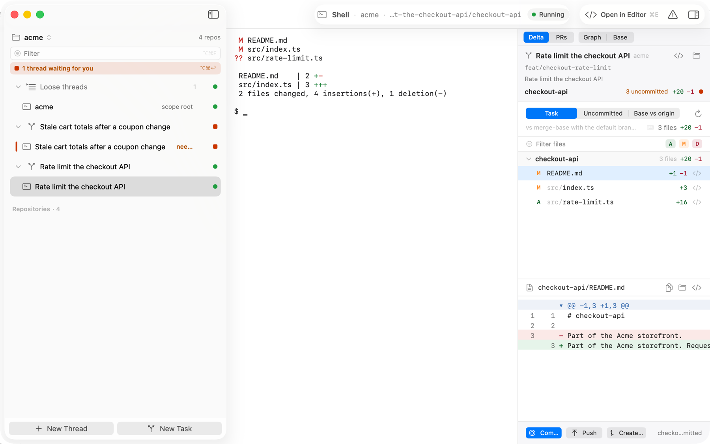
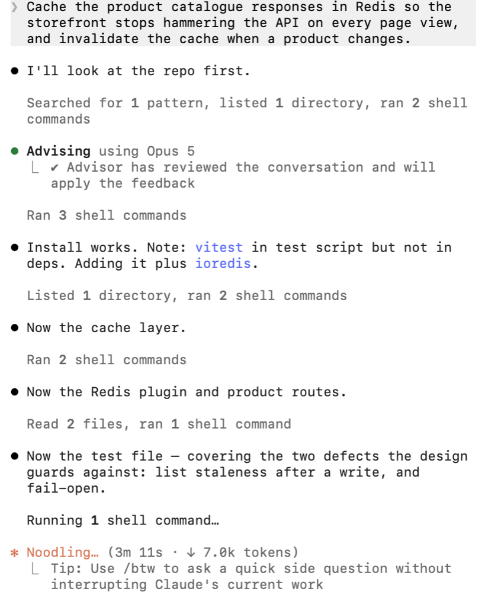
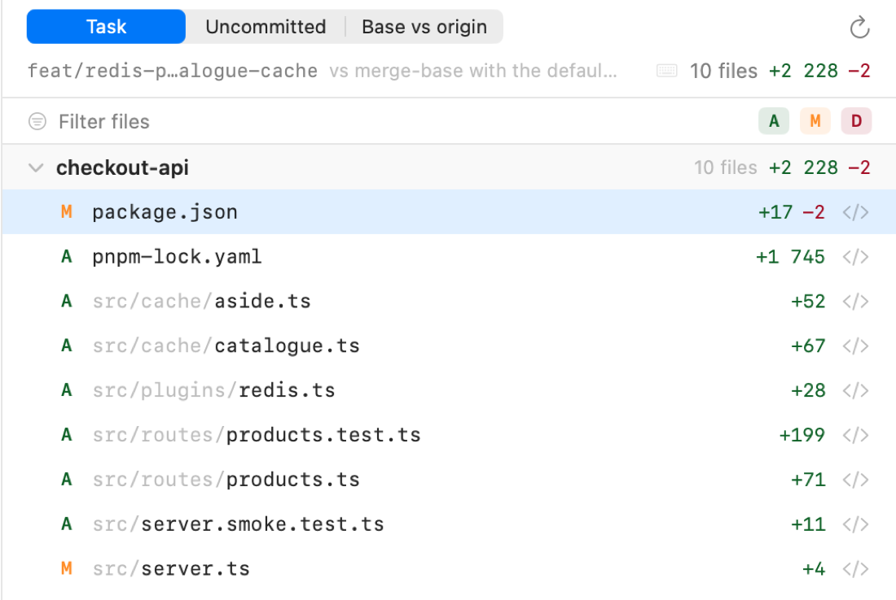

Scope is a native macOS workspace for running Claude Code, Codex, Cursor or a plain shell against your repositories — many agents at once, each in its own terminal, each on its own git worktree, with the diff, the history and the pull request one panel away.

Declare a folder as a scope — a cloned GitHub org, a folder of side projects, a single repository. Scope discovers the repos inside it, and everything else hangs off that: threads, tasks, diffs, graph. It reads your folders and writes nothing inside them.
A driver running in a real PTY, with SCOPE_* in its environment and a live state dot on its sidebar row.
Describe the work in a prompt; the driver proposes the branch, and each repo gets a worktree sandbox.
The diff of the task against its base, per repo — read it, commit it, push it, open the PR.
One card per repo: purpose, stack, entry points, setup and test commands, and who depends on whom.
Hooks report back over a unix socket, so you can see which agent is waiting for you without looking.
Every tool is one JSON file. Edit the bundled ones or add your own; no rebuild.
A task starts as a prompt. The selected driver reads the repository's existing branch names, follows
that convention and proposes a title, a branch and a folder — all three editable before you commit to them.
No imposed scope/ prefix.

One git worktree per repository, on the task branch, under ~/.scope/sandboxes/. Your
checkouts stay on whatever branch you left them on. The agent gets an AGENTS.md describing the
goal and the repos it can touch.

Delta shows the task branch against its merge-base, the uncommitted changes, or the branch against
origin — grouped by repository, with per-file counts. Commit, push and open the pull request
from the same panel.

curl -fsSL https://raw.githubusercontent.com/maastrich/scope/main/scripts/install.sh | bashChecks the DMG against its published SHA-256, installs it and clears the quarantine flag the ad-hoc signature would otherwise trip over. Or build it yourself:
git clone https://github.com/maastrich/scope.git && cd scope
brew install xcodegen
xcodebuild -downloadComponent MetalToolchain # once per machine
make runScope updates itself through Sparkle once installed. Full instructions →